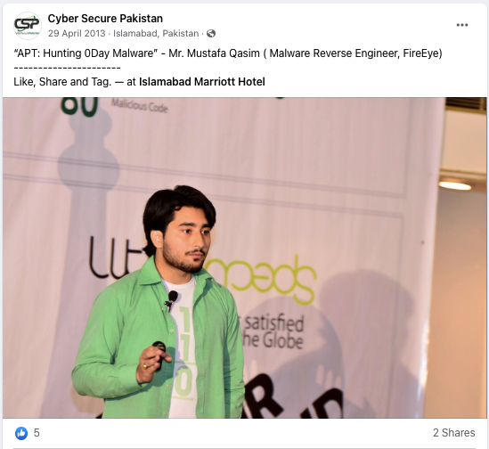
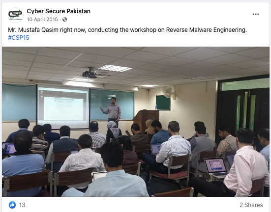

Public Speaking Activity Log
-
2013 -- Delivered a talk at a national-level conference in Pakistan.
 -
2014 -- Delivered a half-day malware reversing workshop at national level conference in Pakistan

-
2015 -- Delivered a 2 full days training on malware reverse engineering at national level conference in Pakistan
 -
2016 -- Delivered a workshop on Threat Hunting at Team Cymru's international conference "Underground Economy" in Doha, Qatar.
-
2016 -- As a FIRST Technical Trainer delivered two full days training on Incident Handling at "Mauritius 2016 FIRST Technical Colloquium" in Mauritius.
-
2020 -- Delivered a 3 hour IR Playbook Development workshop at ComfyCon AU.
-
2020 -- As a FIRST Technical Trainer delivered a 1-day Incident Handling and Response training at Beijing Cyber Security Conference 2020.